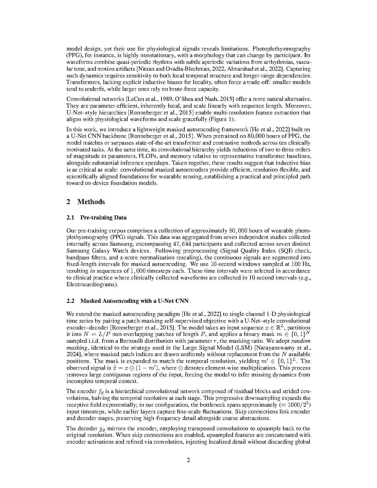
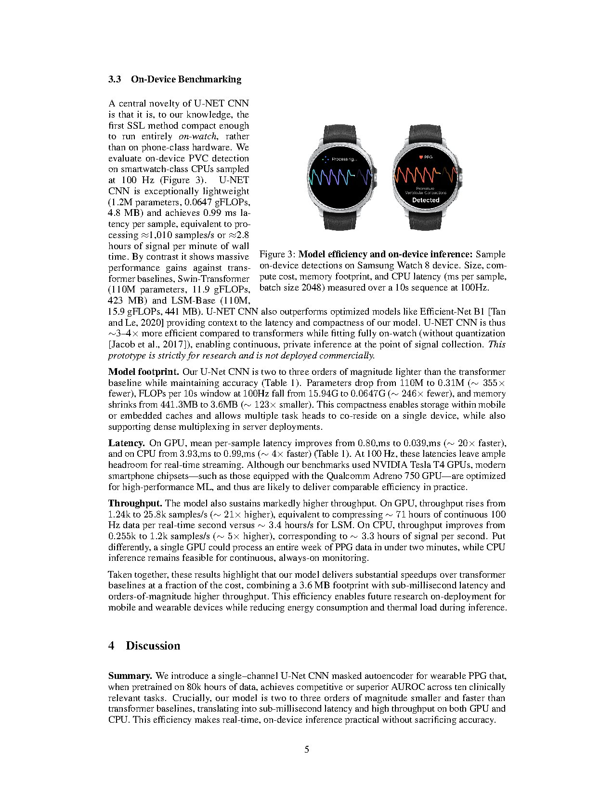

assets/ondevice_fig.jpg to populate this slot.We design and pretrain edge-efficient foundation models for raw wearable signals that preserve representation quality while fitting within the compute, memory, and energy budgets of consumer wearable hardware. The work covers both architectural choices that keep parameter counts low and self-supervised pretraining objectives that scale to billions of unlabeled signal segments without requiring server-class infrastructure.
Health-grade wearable signal modeling on-device unlocks downstream applications in real-time biomarker estimation and proactive health intervention without sending raw data off the device. Bringing pretraining itself toward the edge is the first step toward foundation models that can be specialized to populations and individuals after deployment.

@inproceedings{lee2025ondevice,
title = {Towards On-Device Foundation Models for Raw Wearable Signals},
author = {Lee, Sang-Ah and Tanade, Cyrus and Zhou, Hao and Lee, Juhyeon and Thukral, Megha and Lu, Baiying and Desai, Sharanya Arcot},
booktitle= {NeurIPS 2025 Workshop on Learning from Time Series for Health},
year = {2025}
}